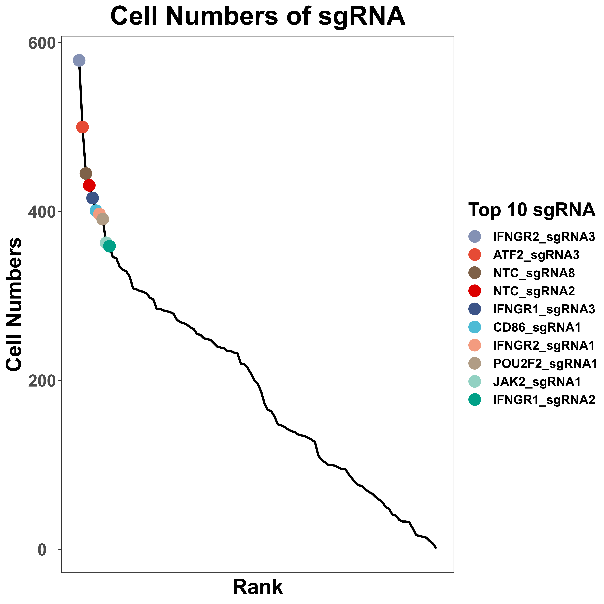
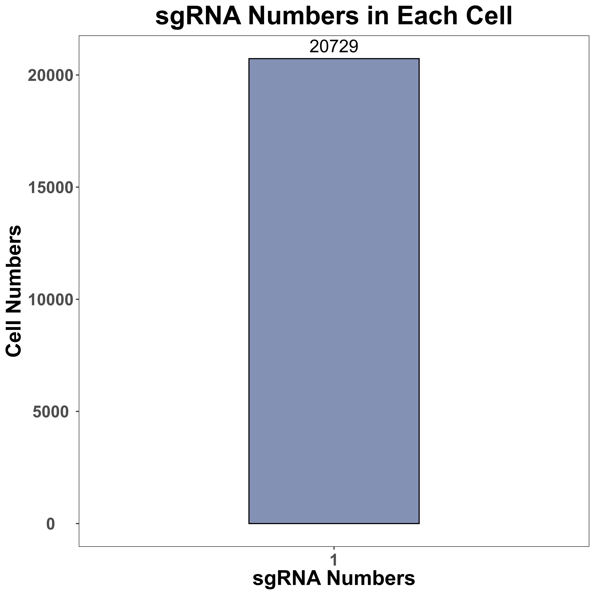
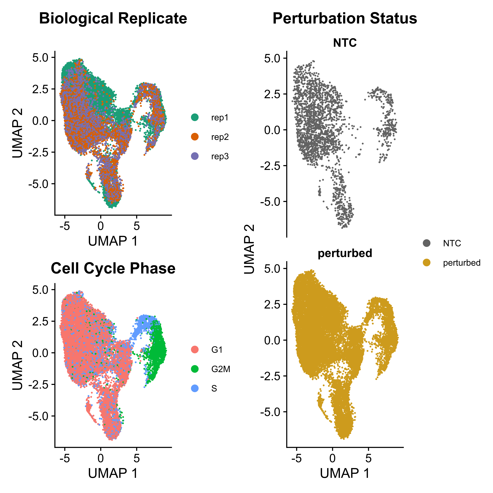
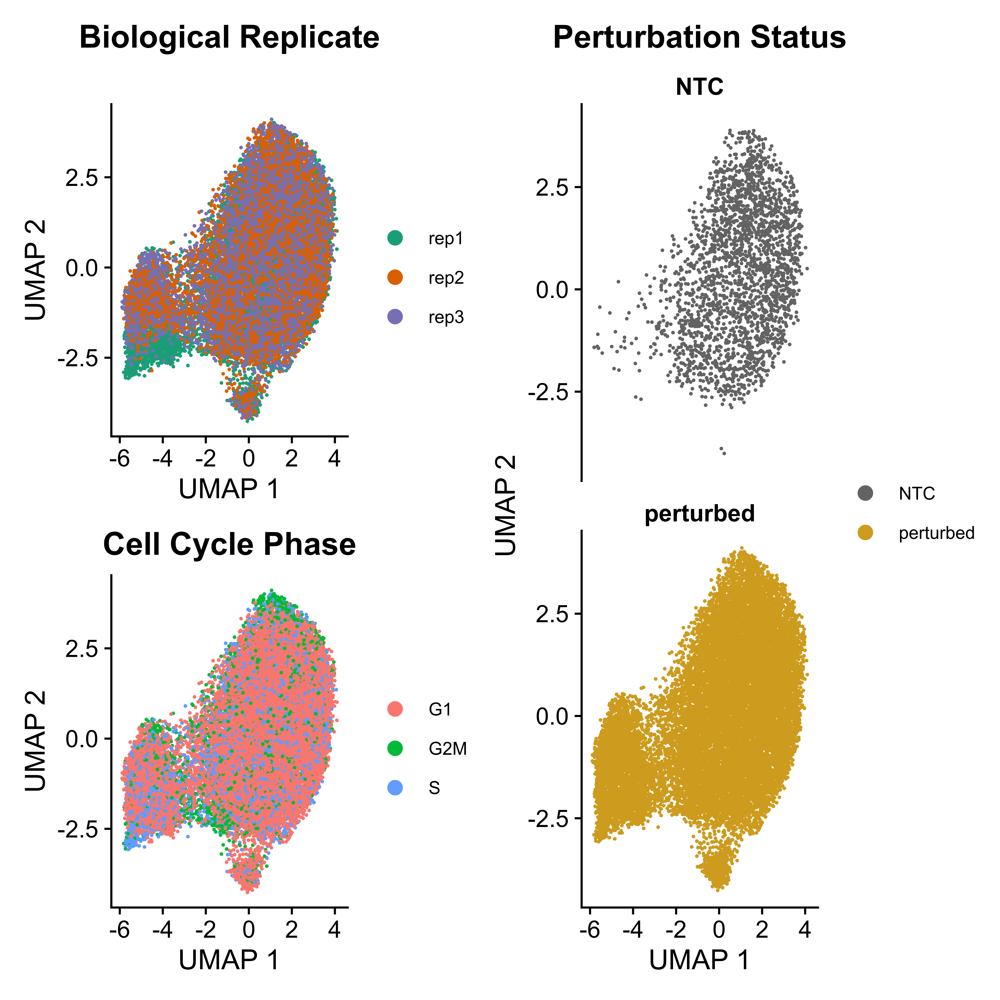
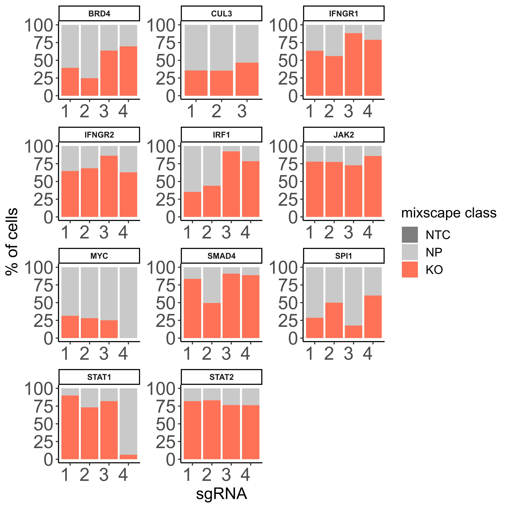
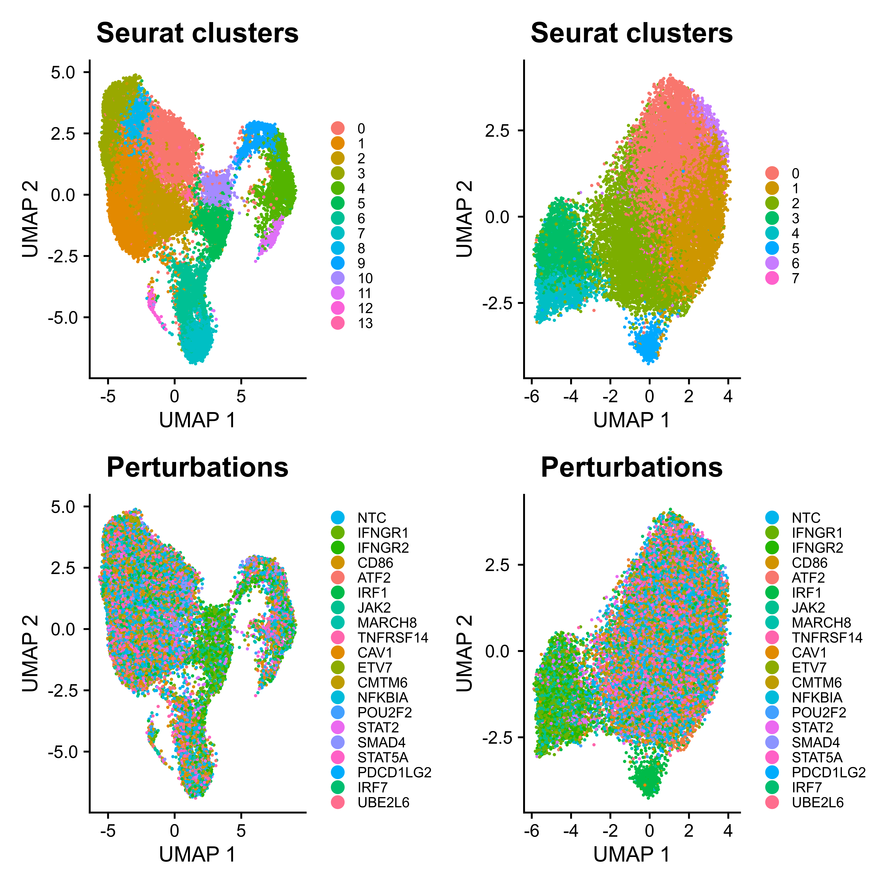
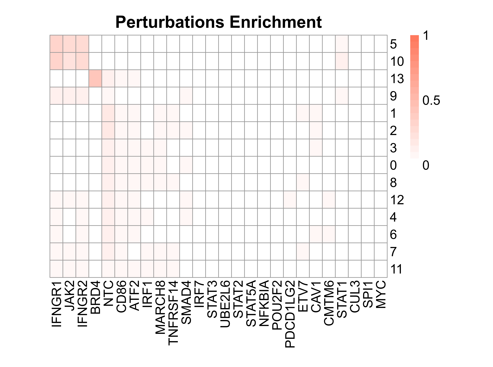
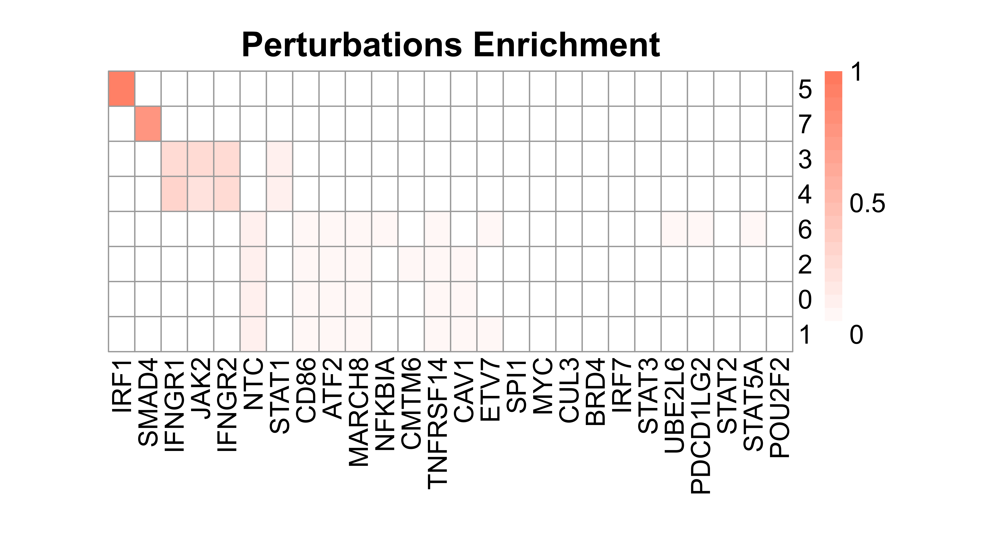

Last updated: 2021-09-23
Checks: 7 0
Knit directory: SCREE/
This reproducible R Markdown analysis was created with workflowr (version 1.6.2). The Checks tab describes the reproducibility checks that were applied when the results were created. The Past versions tab lists the development history.
Great! Since the R Markdown file has been committed to the Git repository, you know the exact version of the code that produced these results.
Great job! The global environment was empty. Objects defined in the global environment can affect the analysis in your R Markdown file in unknown ways. For reproduciblity it’s best to always run the code in an empty environment.
The command set.seed(20210907) was run prior to running the code in the R Markdown file. Setting a seed ensures that any results that rely on randomness, e.g. subsampling or permutations, are reproducible.
Great job! Recording the operating system, R version, and package versions is critical for reproducibility.
Nice! There were no cached chunks for this analysis, so you can be confident that you successfully produced the results during this run.
Great job! Using relative paths to the files within your workflowr project makes it easier to run your code on other machines.
Great! You are using Git for version control. Tracking code development and connecting the code version to the results is critical for reproducibility.
The results in this page were generated with repository version dc5b2b2. See the Past versions tab to see a history of the changes made to the R Markdown and HTML files.
Note that you need to be careful to ensure that all relevant files for the analysis have been committed to Git prior to generating the results (you can use wflow_publish or wflow_git_commit). workflowr only checks the R Markdown file, but you know if there are other scripts or data files that it depends on. Below is the status of the Git repository when the results were generated:
Ignored files:
Ignored: .Rhistory
Untracked files:
Untracked: data/workflow.png
Untracked: img/
Untracked: output/workflow.png
Note that any generated files, e.g. HTML, png, CSS, etc., are not included in this status report because it is ok for generated content to have uncommitted changes.
These are the previous versions of the repository in which changes were made to the R Markdown (analysis/SCREE.Rmd) and HTML (docs/SCREE.html) files. If you’ve configured a remote Git repository (see ?wflow_git_remote), click on the hyperlinks in the table below to view the files as they were in that past version.
| File | Version | Author | Date | Message |
|---|---|---|---|---|
| html | 2c16336 | HailinWei98 | 2021-09-23 | Build site. |
| Rmd | a2a5b0a | HailinWei98 | 2021-09-23 | Publish the initial files for myproject |
| html | eeeebf3 | HailinWei98 | 2021-09-23 | Build site. |
| Rmd | 94450d1 | HailinWei98 | 2021-09-23 | Publish the initial files for myproject |
| html | 94450d1 | HailinWei98 | 2021-09-23 | Publish the initial files for myproject |
| html | 518a5ca | HailinWei98 | 2021-09-22 | Build site. |
| Rmd | ab04ccf | HailinWei98 | 2021-09-22 | Publish the initial files for myproject |
| html | 855bd74 | HailinWei98 | 2021-09-22 | Build site. |
| Rmd | e582e5c | HailinWei98 | 2021-09-22 | Publish the initial files for myproject |
Gene perturbation of scRNA-seq means that the targeted regions of sgRNA design are known gene regions. And after perturbation, scRNA-seq is performed.
Add_meta_data is a function to add metadata into the SeuratObject, which will be used in the subsequent analyses, such as perturbations, percent.mt and replicate information.
replicate <- read.table("ECCITE-seq/replicate.txt", header = F)
mtx <- Add_meta_data(sg_lib = "ECCITE-seq/sg_lib_all.txt",
mtx = "ECCITE-seq/RNA.rds",
species = "Hs",
replicate = replicate)
sgRNA_quality_plot is a function to visualize sgRNA information, including cell numbers for each sgRNA and sgRNA numbers in each cell. We only label the top 10 sgRNA with the most cell numbers in the plot of cell numbers for each sgRNA. In addition, for each gene, we also label all sgRNA of it, in the plot of cell numbers for each sgRNA.
sgRNA_quality_plot(sg_lib = "ECCITE-seq/sg_lib_all.txt",
mtx = mtx,
bar_width = 0.4,
prefix = "example/RNA",
label = "")
|  |  |
scQC is a function to perform single-cell RNA-seq quality control based on "nFeature_RNA" (expressed gene numbers), "nCount_RNA" (total UMI count), "percent.mt" (mitochondrial genes percentage). Since scmageck_lr takes negative control as the baseline for all input cells (assuming all cells have negative control), users can also remove cells without sgRNAs using this function. In addition, this function can visualize the three metrics before and after quality control. Here we only take the violin plot before quality control as an example.
mtx_QC <- scQC(mtx = mtx,
species = "Hs",
prefix = "example/RNA",
label = "",
gene_frac = 0.01,
nFeature = c(200, 100000),
nCount = 1000,
mt = 10,
blank_NTC = FALSE,
plot.show = FALSE,
plot.save = TRUE)
IntegratedMixscape is an integrated function to calculate the enrichment ratio for each perturbation in each cluster, calculate perturb signature, and evaluate perturbation efficiency for each sgRNA. The main functions of IntegratedMixscape are derived from the tutorial of Mixscape. To quickly identify potential highly efficient sgRNAs, we only visualize the sgRNAs with perturbation efficiency of more than 0. Users can perform clustering and perturbation enrichment via umap and CalculatePerturbEnrichment separately.
# Normalize and scale the data
mtx_QC <- normalize_scale(mtx = mtx_QC)
mixscape <- IntegratedMixscape(sg_lib = "ECCITE-seq/sg_lib_all.txt",
mtx = mtx_QC,
NTC = "NTC",
prefix = "example/RNA",
label = "")
# Clustering
mtx_umap <- umap(mtx = mtx_QC,
assays = "RNA",
plot.return = FALSE,
prefix = "example/RNA")
# Calculate perturbation enrichment
ratio <- CalculatePerturbEnrichment(mtx = mtx_umap,
sg_lib = "ECCITE-seq/sg_lib_all.txt",
NTC = "NTC",
NTC.cal = TRUE,
range = c(0, 1),
prefix = "example/RNA")|  |  |  |
As Mixscape calculates perturb signature for each cell labeled with perturbation, SCREE compares the clustering results and perturbation ratio of each cluster to evaluate the perturbation efficiency of each perturbation from another point of view.
|  |  |  |
improved_scmageck_lr is a modified function derived from scmageck_lr in the scmageck package, which can estimate the regulatory score of each perturbation to each gene, based on linear regression and estimate the corresponding p-value based on permutation. The output of improved_scmageck_lr is the transposed matrix of scmageck_lr output.
results <- improved_scmageck_lr(BARCODE = "ECCITE-seq/sg_lib_all.txt",
RDS = mtx_QC,
NEGCTRL = "NTC",
SELECT_GENE = NULL,
LABEL = "improved",
PERMUTATION = 10000,
SAVEPATH = "example/RNA",
LAMBDA = 0.01
NTC_baseline = TRUE)
score <- results[[1]][, -1]
pval <- results[[2]][, -1]
DE_gene_plot is a function to visualize the distribution of potential target gene numbers that passed the threshold for each perturbation.
DE_gene_plot(score = score,
pval = pval,
project = "ECCITE-seq",
prefix = "example/RNA",
label = "",
pval_cut = 0.05,
score_cut = 0.2,
sort_by = "number",
y_break = c(80, 150),
width = 8,
height = 6)
volcano is a function to visualize the distribution of regulatory score and corresponding p-value via volcano plot. All potential targets that passed the threshold will be colored and some top genes with the highest regulatory score will be labeled.
volcano(score = score,
pval = pval,
selected = NULL,
prefix = "example/RNA",
label = "",
score_cut = 0.2,
pval_cut = 0.05,
height = 6,
width = 6,
showCategory = 3))heatmap is an integrated function to calculate and visualize the correlation between perturbations, based on a union gene set of all the perturbations' potential targets.
heatmap(score = score,
pval = pval,
prefix = "example/RNA",
width = "auto",
height = 7)GOenrichment is a function to perform GO enrichment analysis based on the score and p-value generated from improved_scmageck_lr. Users can only select a subset of perturbations to visualize.
GOenrichment(score = score,
pval = pval,
selected = NULL,
prefix = "example/RNA",
score_cut = 0.2,
pval_cut = 0.05,
DE_gene_to_use = "all",
database = "org.Hs.eg.db",
gene_type = "Symbol",
showCategory = 10)
SCREE provides functions to generate a summary HTML file based on all the output results of SCREE. config_generation generates a config in string format including the basic information, output figures, and tables. html_output generates the summary HTML file based on a template HTML file and the config from config_generation.
# Generate string of config
config <- config_generation(mtx = mtx,
mtx_QC = mtx_QC,
sg_lib = "ECCITE-seq/sg_lib_all.txt",
score = score,
pval = pval,
project = "ECCITE-seq",
prefix = "example/RNA",
label = "",
species = "Hs",
version = "v75",
type = "RNA",
NTC = "NTC",
article = "https://pubmed.ncbi.nlm.nih.gov/33649593/",
data = "https://www.ncbi.nlm.nih.gov/geo/query/acc.cgi?acc=GSE153056",
article_name = "Characterizing the molecular regulation of inhibitory immune checkpoints with multimodal single-cell screens",
data_name = "GSE153056",
gene_type = "Symbol",
score_cut = 0.2,
pval_cut = 0.05,
DA = NULL,
cicero = NULL,
enhancer = NULL)
# Generate html file based on the template file and the config.
html_output(html_dir = "RNA_template.html",
config = config,
prefix = "example/RNA",
replace = 3,
label = "")
sessionInfo()R version 4.0.2 (2020-06-22)
Platform: x86_64-apple-darwin17.0 (64-bit)
Running under: macOS Catalina 10.15.7
Matrix products: default
BLAS: /Library/Frameworks/R.framework/Versions/4.0/Resources/lib/libRblas.dylib
LAPACK: /Library/Frameworks/R.framework/Versions/4.0/Resources/lib/libRlapack.dylib
locale:
[1] en_US.UTF-8/en_US.UTF-8/en_US.UTF-8/C/en_US.UTF-8/en_US.UTF-8
attached base packages:
[1] stats graphics grDevices utils datasets methods base
other attached packages:
[1] workflowr_1.6.2
loaded via a namespace (and not attached):
[1] Rcpp_1.0.7 whisker_0.4 knitr_1.33 magrittr_2.0.1
[5] R6_2.5.0 rlang_0.4.11 fansi_0.5.0 stringr_1.4.0
[9] tools_4.0.2 xfun_0.25 utf8_1.2.2 git2r_0.28.0
[13] jquerylib_0.1.4 htmltools_0.5.1.1 ellipsis_0.3.2 rprojroot_2.0.2
[17] yaml_2.2.1 digest_0.6.27 tibble_3.1.3 lifecycle_1.0.0
[21] crayon_1.4.1 later_1.2.0 sass_0.4.0 vctrs_0.3.8
[25] promises_1.2.0.1 fs_1.5.0 glue_1.4.2 evaluate_0.14
[29] rmarkdown_2.10 stringi_1.7.3 bslib_0.2.5.1 compiler_4.0.2
[33] pillar_1.6.2 jsonlite_1.7.2 httpuv_1.6.1 pkgconfig_2.0.3